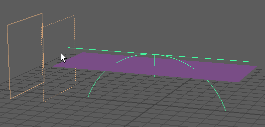
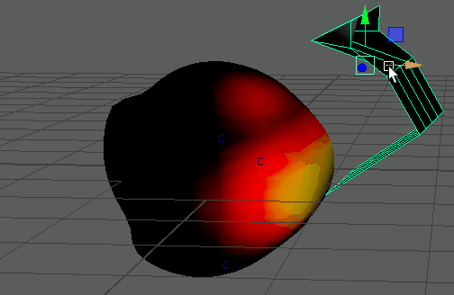
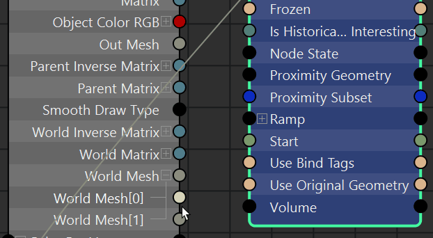
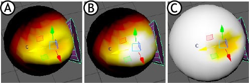
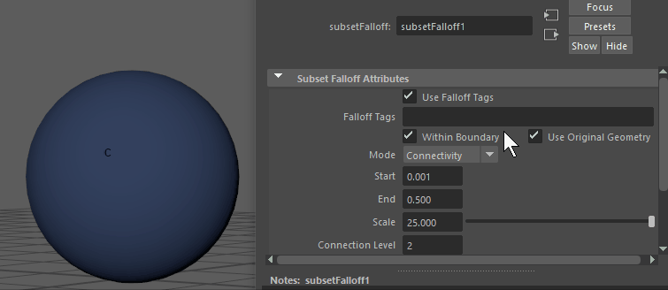
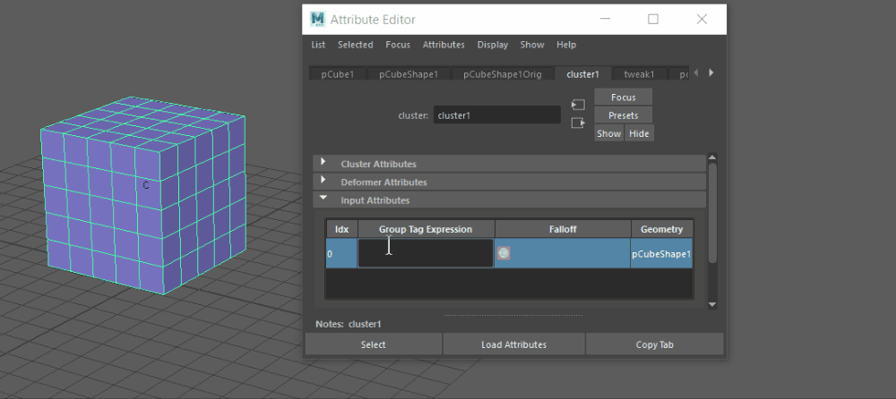

将变形器指定给几何体后，可以为其创建衰减（或值渐变）效果。可以使用多种类型的衰减效果。有关每种类型的描述，请参见变形器衰减。
注： 也可以使用组件标记来表示几何体的各部分，以使变形器只影响被标记和选择的部分。如果未选择组件标记，则变形器将应用于整个几何体。有关如何创建几何体组件组的信息，请参见为几何体指定组件标记。
应用变形器衰减
请记住，使用变形器衰减时，衰减范围以 0% 应用于变形器。在下面的动画中，在应用了弯曲变形器的平面上使用基本体衰减。
注： 如果“变形器属性”(Deformer Attributes)区域灰显，则选定变形器不支持衰减。

- 基本体衰减：使用衰减对象控制效果
-
- 选择几何体并添加变形器。
- 在“属性编辑器”(Attribute Editor)中，选择“<变形器名称>”选项卡并展开“变形器属性”(Deformer Attributes)构件。
- 在“组件标记”(Component Tag)列上单击鼠标右键，然后选择。
- 在“<变形器名称>”选项卡中，再次在“组件标记表达式编辑器”(Component Tag Expression Editor)上单击鼠标右键，然后选择“选择衰减”(Select Falloff)。场景中将出现一个表示变形器衰减的线框。（如果衰减对象不可见，其可能隐藏在几何体内：在“大纲视图”(Outliner)中选择“基本体衰减”(Primitive Falloff)。）
- 在“属性编辑器”(Attribute Editor)中选择“基本体衰减”(Primitive Falloff)选项卡，然后在“基本体衰减属性”(Primitive Falloff Attributes)设置中编辑衰减渐变。在渐变“基本体”(Primitive)菜单中，为球体或平面切换衰减对象。
注： 可以选择球体或平面作为衰减对象。形状类型控制衰减的行为。选择“球体”(Sphere)(B) 可实现从球体中心到其外边缘的衰减；如果希望获得二维衰减效果，则选择“平面”(Plane) (A)。使用平面衰减对象时，衰减效果出现在两个平面之间的空间中。

如果希望使用自己的几何体作为衰减对象，请参见下面的接近度衰减。
有关此衰减的“属性编辑器”(Attribute Editor)设置的详细信息，请参见基本体衰减属性。
- 均匀衰减：创建一致的衰减效果
- 均匀衰减是一种简单衰减，用于将均匀衰减效果应用于几何体。
-
- 选择几何体并添加变形器。
- 在“属性编辑器”(Attribute Editor)中，选择“<变形器名称>”选项卡并展开“变形器属性”(Deformer Attributes)构件。
- 在“组件标记”(Component Tag)列上单击鼠标右键，然后选择。
- 在“衰减”(Falloff)上单击鼠标右键，然后选择“选择衰减”(Select Falloff)。将向“属性编辑器”(Attribute Editor)添加了新的“均匀衰减 1”(UniformFalloff1)选项卡。
- 在“均匀衰减 1”(UniformFalloff1)选项卡中，展开“附加属性”(Extra Attributes)部分以显示“均匀权重”(Uniform Weight)字段。
- 在“均匀权重”(Uniform Weight)字段中输入变形衰减的值。
权重值为 1.00 表示 100% 变形，即存在完全变形且无衰减效果，而权重值为 0 则会擦除变形效果。将该值增加到超过 1.0 将放大变形。
- 融合衰减：混合变形器权重
- 要在几何体上组合衰减效果时，使用融合衰减。
注： 必须将多个变形器应用于同一几何体才能使用此功能。
-
- 选择几何体，然后在“属性编辑器”(Attribute Editor)中，选择主变形器选项卡并展开“变形器属性”(Deformer Attributes)构件。
- 在“组件标记”(Component Tags)列上单击鼠标右键，然后选择。
- 再次在“衰减”(Falloff)列中，在“融合衰减”(Blend Falloff)上单击鼠标右键，然后选择“选择衰减”(Select Falloff)。“属性编辑器”(Attribute Editor)将切换到“融合衰减 1”(Blend Falloff 1)选项卡。
- 在“属性编辑器”(Attribute Editor)中的“融合衰减”(Blend Falloff)构件中，单击“融合衰减属性”(Blend Falloff Attributes)构件上方的“添加新指定”(Add New Assignment)
 图标。将添加一个新行。
图标。将添加一个新行。
- 在名称字段中单击鼠标右键，然后从快捷菜单中选择要融合的衰减。请注意，应在场景中选择现有衰减，而不创建新的衰减效果。
- 继续在新行中从场景添加衰减。

- 使用“模式”(Mode)菜单为每行选择衰减的融合方式：
- 可以对每个衰减执行相乘、相除、相加、相减、覆盖和最大化操作
- 在“权重”(Weight)字段上单击鼠标右键，以创建新的表达式或纹理、锁定属性或为属性设置关键帧。
有关详细信息，请参见融合衰减属性主题。
注： 可以对“融合衰减属性”(Blend Falloff Attributes)表中的衰减重新排序，方法是选择一行，然后使用表上方的上移或下移图标。表中的最后一个衰减优先于表中它前面的衰减，因为它是添加的最后一个衰减。 - 接近度衰减：使用自定义几何体控制效果
-

“权重可视化”(Weights Visualization)处于活动状态的接近度衰减
- 使用接近度衰减可将几何体的接近度用作创建衰减效果的方法。
-
- 选择几何体并添加变形器。
- 在“属性编辑器”(Attribute Editor)中，选择“<变形器名称>”选项卡并展开“变形器属性”(Deformer Attributes)构件。
- 在“组件标记”(Component Tags)列上单击鼠标右键，然后选择。
- 打开节点编辑器(Node Editor)，找到要用作变形影响的对象的 <shape1> 节点和 ProximityFalloff1 节点。
- 将影响对象的“世界网格 0”(World Mesh 0)连接到 ProximityFalloff 节点的“接近度几何体”(Proximity Geometry)对象。

- （可选）若要查看衰减对象的影响，请在“属性编辑器”(Attribute Editor)中的“衰减”(Falloff)选项卡上单击鼠标右键，然后选择“权重可视化”(Weights Visualization)。
- 在“属性编辑器”(Attribute Editor)中选择“接近度衰减”(Proximity Falloff)选项卡，然后从“体积”(Volume)菜单中选择“内部”(Inside)、“外部”(Outside)或“无”(None)，以设置几何体质量对衰减效果有何影响。有关设置的信息，请参见接近度衰减属性。

圆锥基本体衰减对象：“体积”(Volume)设置为 A.“无”(None)，B.“内部”(Inside)，C.“外部”(Outside)。
创建之后，“接近度衰减”(Proximity Falloff)具有多个选项。
- 为接近度子集指定组件标记表达式，并绑定标记以定义要检查接近度的子集
- 基于曲面法线指定伪体积近似
- 子集衰减：应用于组件标记的变形
- 使用子集衰减可将变形限制到由组件标记定义的几何体子集。
-
- 选择几何体并添加变形器。
- 在“属性编辑器”(Attribute Editor)中，选择“<变形器名称>”选项卡并展开“变形器属性”(Deformer Attributes)构件。
- 在“衰减”(Falloff)列上单击鼠标右键，然后选择。
- 双击“变形器属性”(Deformer Attributes)表的“衰减”(Falloff)列中的 SubsetFalloff1 单元。“属性编辑器”(Attribute Editor)将显示子集衰减属性(Subset falloff Attributes)。
- 启用“使用衰减标记”(Use Falloff Tags)。如果未激活此选项，则变形将应用于变形成员身份。
- 在“衰减标记”(Falloff Tags)字段中，添加要用于变形的组件标记的名称，然后按 Enter 键。“衰减标记”(Falloff Tags)字段支持正则表达式，可简化添加组件标记的过程。

- 调整“子集衰减属性”(Subset Falloff Attributes)以控制如何应用变形以及如何计算值。有关设置的信息，请参见子集衰减属性(Subset Falloff Attributes)。
- （可选）若要更好地查看衰减影响，请在“属性编辑器”(Attribute Editor)的“变形器属性”(Deformer Attributes)构件中的“衰减”(Falloff)选项卡上单击鼠标右键，然后选择“权重可视化”(Weights Visualization)。
- 组件衰减：绘制变形器权重
- 使用组件衰减可以将变形器衰减值绘制到组件标记选择上。
-

-
在具有组件标记和变形器的几何体上
- 在“属性编辑器”(Attribute Editor)中选择变形器选项卡，然后展开“变形器属性”(Deformer Attributes)构件。
- 在“组件标记”(Component Tag)列上单击鼠标右键，然后选择。将向“属性编辑器”(Attribute Editor)添加“组件衰减”(Component Falloff)选项卡。
- 再次在“衰减”(Falloff)列上单击鼠标右键，然后选择 <变形器名称>”(Paint Component Falloff > Component Falloff <deformer name>)。
- 几何体变为白色并为绘制做好准备。在几何体上绘制权重，白色表示无权重，黑色表示完全权重。可以设置绘制工具属性，方法是双击工具箱(Tool Box)中的“绘制”(Paint)图标，或单击 Maya 界面右上角的工具设置图标。
- 完成后，返回到对象模式 (F8)。
- 选择簇控制柄以查看变形。
- 传递衰减：重用衰减权重
- 如果要将一个变形器的衰减权重应用于另一个变形器，可使用传递衰减。
-
- 在具有要接收衰减的变形器的几何体上，在变形器的“属性编辑器”(Attribute Editor)选项卡的变形器属性(Deformer Attributes)部分中选择。
- 在“组件标记”(Component Tag)列中，在“传递衰减”(Transfer Falloff)上单击鼠标右键，然后选择“选择衰减”(Select Falloff)。“属性编辑器”(Attribute Editor)将切换到“传递衰减 1”(Transfer Falloff 1)选项卡。
- 单击“传递衰减属性”(Transfer Falloff Attributes)表上方的“添加新指定”(Add new assignment)图标。将添加一个新行。
- 在名称字段中单击鼠标右键，然后从快捷菜单中选择要传递的衰减。请注意，应在场景中选择现有衰减，而不创建新的衰减效果。
- 在传递衰减（“输入属性”(Input Attributes)选项卡）中，在表内单击鼠标右键，选择“添加(原始)衰减”(Add (the original) falloff)，然后从此处列出的现有衰减中选择要“传递”到此几何体的衰减。